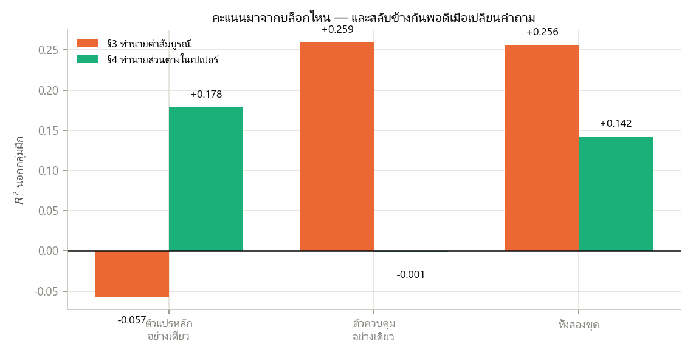
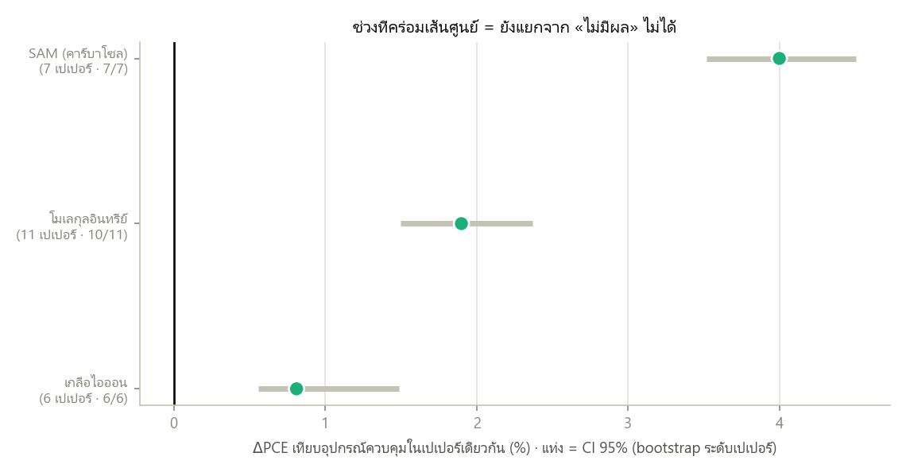
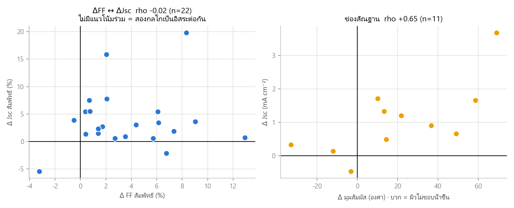

แบบจำลองบนชุดข้อมูล 95 อุปกรณ์ จาก 31 เปเปอร์
พร้อมที่มาของทุกตัวเลขระดับรายเปเปอร์ สำหรับตรวจย้อนด้วยมือ
ตัวแบบจำลองเองทำนายไม่แม่น และนั่นไม่ใช่ข้อบกพร่องของมัน แต่เป็นข้อเท็จจริงของข้อมูล — คะแนนที่ดูดีของการทำนายข้ามแล็บ (+0.259) มาจากการจำสูตรเคมีของแต่ละแล็บ ไม่ใช่จากกลไก สิ่งที่งานนี้ได้จริงคือ ขนาดผลข้ามแล็บ ที่วัดอย่างคุมตัวกวนแล้ว และ โครงสร้างของกลไก ที่เปเปอร์เดี่ยวมองไม่เห็น
ขอบเขตของข้ออ้างสำคัญกว่าตัวเลขความแม่น เพราะข้อมูลชุดนี้ตอบคำถามหนึ่งได้ดีและอีกคำถามหนึ่งไม่ได้เลย
| คำถาม | ตอบได้ไหม | หลักฐาน |
|---|---|---|
| อุปกรณ์ของแล็บที่ไม่เคยเห็น จะได้ PCE เท่าไร | ไม่ได้ | ใช้ตัวแปรฝั่ง HTL อย่างเดียว ได้ R2 = -0.057 — แย่กว่าการทายค่ากลาง |
| ถ้าแล็บนี้ดัดแปลงผิว HTL จะดีขึ้นกว่าตัวเองเท่าไร | ได้ | R2 = +0.178 และขนาดผล Δpce ค่ากลาง +1.995 · ทิศบวก 21/22 · p=1.097e-05 |
| ควรตั้งความเร็วปั่น/อุณหภูมิอบเท่าไร | ไม่ได้ | พารามิเตอร์เชิงตัวเลขทุกตัวแปรค่าภายในเปเปอร์ 0 ฉบับ — แยกจากตัวตนของแล็บไม่ออก |
| ผลที่ได้วิ่งผ่านกลไกอะไร | ได้บางส่วน | แยกได้ว่ามีอย่างน้อยสองช่องทางที่เป็นอิสระต่อกัน (§6) แต่ปริมาณของแต่ละช่องยังไม่แน่นอน |
ไม่ใช่การอ้างว่าสร้างตัวทำนายประสิทธิภาพได้ · ไม่ใช่ข้อสรุปเชิงสาเหตุ เพราะเป็นการสังเคราะห์การทดลองที่คนอื่นออกแบบ ไม่ใช่การทดลองสุ่มที่เราคุมเอง · ผลทุกข้อคือสมมติฐานสำหรับการทดลองยืนยันในแล็บ
| กติกา | ทำอย่างไร | ทำไมต้องทำ |
|---|---|---|
| แบ่งข้อมูลตามเปเปอร์ | LeaveOneGroupOut ตัดทีละเปเปอร์ รวม 31 รอบ | อุปกรณ์จากเปเปอร์เดียวกันใช้สูตรชุดเดียวกัน ถ้าแบ่งสุ่มจะมีพี่น้องอยู่ทั้งสองฝั่ง = จำสูตร ไม่ใช่เรียนกลไก |
| รวมคำทำนายทุกรอบมาคิดทีเดียว | เก็บคำทำนายนอกกลุ่มฝึกของทุกอุปกรณ์ แล้วคิดคะแนนครั้งเดียว | แต่ละรอบเหลืออุปกรณ์ทดสอบ 2–5 ตัว คะแนนรายรอบไม่มีความหมาย และการเฉลี่ยยิ่งผันผวน |
| ห้ามเติมค่าที่หายข้ามเปเปอร์ | ปล่อยค่าว่างไว้ ให้ Random Forest จัดการเอง | ข้อมูลหายเป็นก้อนตามเปเปอร์ การเติมข้ามเปเปอร์ = ประดิษฐ์ข้อมูลของแล็บหนึ่งจากอีกแล็บ |
| ไม่จูนไฮเปอร์พารามิเตอร์ | ตั้งค่าจากขนาดข้อมูลตรง ๆ แล้วประกาศไว้ก่อนดูผล | ข้อมูลไม่พอทำ nested CV ที่เชื่อถือได้ — ตัวเลขที่รายงานจึงไม่ได้ถูกคัดมาให้สวย |
คะแนน R2 ลอย ๆ ไม่มีความหมายถ้าไม่รู้ว่าอะไรคือ «ทายมั่ว» และอะไรคือ «ดีที่สุดที่เป็นไปได้» จึงวัดสองเส้นนี้ด้วยกติกาเดียวกับแบบจำลอง
| เส้น | ทายด้วยอะไร | ความหมาย |
|---|---|---|
| พื้น | ค่ากลางของอุปกรณ์ในกลุ่มฝึก | ไม่ใช้ข้อมูลตัวแปรเลย |
| เพดาน | ค่ากลางของเปเปอร์ที่ถูกตัดออกเอง | ทายไม่ได้จริงตอนใช้งาน — วัดไว้เพื่อบอกว่าตัวตนของเปเปอร์อธิบายความแปรปรวนไปแล้วเท่าไร |
นี่คือผลที่แข็งที่สุดของงาน และเป็นข้อค้นพบเชิงระเบียบวิธีที่ใช้ได้เกินขอบเขตงานนี้
แทนที่จะรายงาน R2 ตัวเดียว เราแยกวัดทีละบล็อกของตัวแปร ว่าคะแนนที่ได้มาจากฝั่งไหน
| บล็อกตัวแปร | ทำนายค่าสัมบูรณ์ | ทำนายส่วนต่างในเปเปอร์ |
|---|---|---|
| ตัวแปรหลักอย่างเดียว | -0.057 | +0.178 |
| ตัวควบคุมอย่างเดียว | +0.259 | -0.001 |
| ทั้งสองชุด | +0.256 | +0.142 |

สูตรเคมีของแต่ละแล็บเกือบไม่ซ้ำกัน มันจึงทำหน้าที่เป็นลายนิ้วมือของเปเปอร์ เมื่อให้แบบจำลองทำนายค่าสัมบูรณ์ มันเลยทำคะแนนได้ +0.259 จากการเดาว่า «นี่คือเปเปอร์แนวไหน» ไม่ใช่จากการเข้าใจว่าการดัดแปลงทำอะไร
พอลบค่ากลางของเปเปอร์ออก (วิธีเดียวกับ fixed effects) ทุกอย่างที่คงที่ทั้งเปเปอร์หายไปหมด — สูตรเคมี ชนิด ETL ความเร็วปั่น อุณหภูมิอบ รวมถึงสิ่งที่เราไม่ได้บันทึกไว้เลย เช่น ความชื้นในกล่อง ฝีมือคนทำ ยี่ห้อสารตั้งต้น ตัวควบคุมจึงเหลือ -0.001 คือศูนย์ตามทฤษฎี
บทเรียนที่ใช้ได้ทั่วไป: งาน ML ที่รายงาน R2 ตัวเดียวจากการเทรนข้ามแล็บ โดยไม่แยกว่าคะแนนมาจากบล็อกไหน อาจกำลังรายงานความสามารถในการจำแล็บ
SHAP ตอบว่า แบบจำลองที่ฝึกเสร็จแล้วใช้ตัวแปรนี้อย่างไร ซึ่งไม่เหมือนกับ ตัวแปรนี้ช่วยทำนายเปเปอร์ที่ไม่เคยเห็นจริงหรือไม่ จึงวัดคู่กันสองแบบ และตัดออกทั้งกลุ่มของตัวแปรเดียวกันเสมอ ไม่ใช่ทีละคอลัมน์ย่อย
| ตัวแปร | บทบาท | |SHAP| เฉลี่ย | R2 ที่หายถ้าตัดออก | ขึ้นอันดับ 1 |
|---|---|---|---|---|
htl_mod_kind | ตัวแปรหลัก | 0.722 | +0.155 | 100% |
htl_route | ตัวแปรหลัก | 0.139 | -0.017 | 0% |
htl_dope | ตัวแปรหลัก | 0.103 | +0.034 | 0% |
etl_family | ตัวควบคุม | 0.095 | +0.017 | 0% |
x_Br | ตัวควบคุม | 0.094 | +0.014 | 0% |
a_FA | ตัวควบคุม | 0.070 | +0.019 | 0% |
a_Cs | ตัวควบคุม | 0.033 | -0.001 | 0% |
htl_mod_kind เด่นทั้งสองวิธี และขึ้นอันดับหนึ่งใน 100%
ของการสุ่มเปเปอร์ซ้ำ — ถือได้ว่ามั่นคง
แต่ตัวแปรที่ค่า R2 ที่หายถ้าตัดออกติดลบ คือตัวที่ ตัดทิ้งแล้วแบบจำลองดีขึ้น ทั้งที่ SHAP ให้น้ำหนักมันไม่น้อย — แปลว่าแบบจำลองใช้มันจริง แต่ใช้แล้วไม่ช่วย นี่คือเหตุผลที่รายงาน SHAP อย่างเดียวไม่พอ
วัดโดยเทียบกับอุปกรณ์ควบคุมในเปเปอร์เดียวกันเท่านั้น แล้วรวมผลระดับเปเปอร์ — หน่วยของช่วงความเชื่อมั่นคือ เปเปอร์ ไม่ใช่อุปกรณ์ จึงไม่เกิดการนับตัวอย่างซ้ำ (มี 22 เปเปอร์ที่มีคู่เทียบ จาก 31 ฉบับ)
| ตัวชี้วัด | เปเปอร์ | ค่ากลาง · ทิศทาง · p |
|---|---|---|
| Δpce | 22 | +1.995 · ทิศบวก 21/22 · p=1.097e-05 |
| Δff | 22 | +1.962 · ทิศบวก 20/22 · p=0.0001211 |
| Δvoc | 22 | +0.0475 · ทิศบวก 18/22 · p=0.004344 |
| Δjsc | 22 | +0.6217 · ทิศบวก 20/22 · p=0.0001211 |
| Δvtfl | 13 | -0.145 · ทิศบวก 0/13 · p=0.0002441 |
| Δtrap_density | 12 | -1.645e+15 · ทิศบวก 0/12 · p=0.0004883 |
| Δcontact_angle | 11 | +14.3 · ทิศบวก 8/11 · p=0.2266 |
| Δgrain_size | 4 | +68 · ทิศบวก 4/4 · p=0.125 |
| Δafm_rms | 7 | -1.1 · ทิศบวก 0/7 · p=0.01562 |
| Δvbm | 9 | -0.155 · ทิศบวก 3/9 · p=0.5078 |
| Δwork_function | 5 | +0.21 · ทิศบวก 5/5 · p=0.0625 |
| Δhi | 6 | -2.33 · ทิศบวก 1/6 · p=0.2188 |
| Δretention_25c | 7 | +10 · ทิศบวก 7/7 · p=0.01562 |
| Δdegradation_rate | 7 | -0.01704 · ทิศบวก 0/7 · p=0.01562 |
| กลุ่มสาร | เปเปอร์ | ΔPCE ค่ากลาง (%) | CI 95% | ทิศบวก | สรุป |
|---|---|---|---|---|---|
| SAM (คาร์บาโซล) | 7 | +4.00 | [+3.52, +4.50] | 7/7 | แยกจากศูนย์ได้ |
| ** รวมทุกกลุ่ม ** | 22 | +2.00 | [+1.52, +2.50] | 21/22 | แยกจากศูนย์ได้ |
| โมเลกุลอินทรีย์ | 11 | +1.90 | [+1.50, +2.37] | 10/11 | แยกจากศูนย์ได้ |
| เกลือไอออน | 6 | +0.81 | [+0.56, +1.49] | 6/6 | แยกจากศูนย์ได้ |

10.1016j.nanoen.2021.106285)การจัดอันดับที่รายงานจึงครอบคลุมเฉพาะกลุ่มที่มีคู่เทียบจริง ไม่ใช่ทุกกลุ่มสารที่มีอยู่ในชุดข้อมูล
retention_25c และ degradation_rate อยู่ในชุดข้อมูลมาตลอดแต่ไม่เคยถูกวิเคราะห์ ทั้งที่เสถียรภาพคือคอขวดจริงของเพอรอฟสไกต์ ไม่ใช่ประสิทธิภาพ · ใช้วิธีเดียวกับ §5.1 ทุกประการ
| ตัวชี้วัด | ทิศทางที่ดี | เปเปอร์ | ค่ากลาง | CI 95% | ดีขึ้น | p |
|---|---|---|---|---|---|---|
retention_25c | สูงขึ้น | 7 | +10 | [+7, +25] | 7/7 | 0.0156 |
degradation_rate | ต่ำลง | 7 | -0.017 | [-0.1389, -0.0064] | 7/7 | 0.0156 |
ตัวหนึ่งวัดว่าเหลือประสิทธิภาพเท่าไรหลังทดสอบ อีกตัววัดว่าเสื่อมเร็วแค่ไหน ทั้งคู่บอกว่าดีขึ้น 7 จาก 7 เปเปอร์ ที่วัด · การที่สองมุมมองที่คำนวณคนละทางเห็นตรงกัน ทำให้ผลนี้แข็งกว่าตัวเลขเดี่ยว
ข้อจำกัด ยืนบนเปเปอร์เพียง 7 ฉบับ และอคติจากการตีพิมพ์ใช้ได้เต็มที่กับผลนี้เช่นกัน
| เปเปอร์ | จำนวนระดับที่ไล่ | ปริมาณที่ดีสุด | PCE ที่ดีสุด | rho | รูปแบบ |
|---|---|---|---|---|---|
10.1016_j.solmat.2025.113858 | 3 | 0.05 | 22.22 | -1.00 | ลงตลอด |
10.1016j.nanoen.2021.106285 | 2 | 5 | 21.90 | — | มีจุดเหมาะสม |
10_1002_aenm_202405016 | 3 | 2 | 25.66 | +0.87 | มีจุดเหมาะสม |
10_1016_j_heliyon_2024_e25352 | 4 | 10 | 20.50 | -0.40 | มีจุดเหมาะสม |
10_31635_ccschem_025_202505977 | 2 | 2 | 25.28 | — | มีจุดเหมาะสม |
จุดที่ดีที่สุดอยู่ตรงกลาง (ไม่ใช่ปลายสุด) เพียง 1 จาก 5 เปเปอร์ ที่ไล่ปริมาณ — สรุปได้แค่ว่า «ไม่ใช่ยิ่งมากยิ่งดี» ยังสรุปไม่ได้ว่ามีจุดเหมาะสมตรงกลางเสมอ
ส่วนที่ใหม่ที่สุดของงาน · เปเปอร์เดี่ยวมีสารเดียวจึงเห็นได้ช่องเดียว ต้องมีการทดลอง A/B อิสระหลายสิบชุดถึงจะเห็นว่ามันแยกกัน
สมมุติฐานเดิมคือมีช่องทางเดียว (ลดกับดักพาหะ → ผลลัพธ์ดีขึ้น) ซึ่งตรวจสอบได้ตรง ๆ: ถ้ามีช่องทางเดียวจริง องค์ประกอบทั้งสามของ PCE ต้องขึ้นลงพร้อมกัน
| คู่ที่วัด | สหสัมพันธ์อันดับ | เปเปอร์ |
|---|---|---|
Δff ↔ Δjsc | -0.02 | 22 |
Δff ↔ Δvoc | -0.25 | 22 |
Δjsc ↔ Δvoc | +0.57 | 22 |
Δvtfl ↔ Δff | +0.35 | 13 |
Δvtfl ↔ Δjsc | +0.21 | 13 |
Δvtfl ↔ Δvoc | -0.08 | 13 |
Δcontact_angle ↔ Δjsc | +0.65 | 11 |
Δcontact_angle ↔ Δff | -0.10 | 11 |
Δgrain_size ↔ Δjsc | +0.40 | 4 |

| ช่องทาง | ตัวกลางที่วัดได้ | เกาะกับช่องตัวเอง | เกาะกับอีกช่อง |
|---|---|---|---|
| อิเล็กทรอนิกส์ — กับดักที่รอยต่อลดลง | vtfl | ΔFF +0.35 | ΔVoc -0.08 |
| สัณฐาน — การตกผลึกของเพอรอฟสไกต์เปลี่ยน | contact_angle | ΔJsc +0.65 | ΔFF -0.10 |
ถ้าเป็นกลไกเดียวกัน ตัวกลางทั้งสองต้องเกาะกับทุกองค์ประกอบพอ ๆ กัน ซึ่งไม่ใช่ · หลักฐานหลักคือสหสัมพันธ์ ΔFF ↔ ΔJsc ซึ่งไม่ต้องใช้เกณฑ์แบ่งกลุ่มใด ๆ เลย
สมมุติฐานตั้งต้นคือ «ผิวเปียกขึ้น → ฟิล์มคลุมดีขึ้น → Jsc ขึ้น» แต่ข้อมูลบอกตรงข้าม: Δcontact_angle ค่ากลาง +14.3 · ทิศบวก 8/11 · p=0.2266 และเปเปอร์ที่มุมสัมผัสเพิ่มมาก คือเปเปอร์ที่ Jsc เพิ่มมาก
อ่านได้ว่า ผิวไม่ชอบน้ำขึ้น → จุดก่อผลึกน้อยลง → เกรนใหญ่ขึ้น → Jsc ขึ้น ซึ่งสอดคล้องกับวรรณกรรม และ Δgrain_size ค่ากลาง +68 · ทิศบวก 4/4 · p=0.125 ก็หนุนไปทางเดียวกัน
แต่นี่เป็นการตีความ ไม่ใช่สิ่งที่ข้อมูลชุดนี้พิสูจน์ — ข้อต่อ «เกรนใหญ่ขึ้น» ยืนบนเปเปอร์เพียง 4 ฉบับ นี่คือช่องว่างที่ควรเก็บข้อมูลเพิ่มเป็นอันดับแรก
| ช่องทาง | เปเปอร์ |
|---|---|
| ช่อง FF อย่างเดียว | 5 |
| ช่อง Jsc อย่างเดียว | 5 |
| ทั้งสองช่อง | 11 |
| ไม่ขยับทั้งคู่ | 1 |
การจัดว่าเปเปอร์ไหน «ใช้ช่องเดียว» ต้องมีเส้นแบ่งว่าขยับเท่าไรจึงนับว่าขยับ เมื่อขยับเส้นแบ่ง จำนวนในแต่ละกลุ่มเปลี่ยน — ที่เกณฑ์หลวมมากเกือบทุกเปเปอร์เข้ากลุ่ม «ทั้งสองช่อง» สิ่งที่ยืนได้คือ มีเปเปอร์ที่ใช้ช่องเดียวจริงในทั้งสองฝั่ง ไม่ใช่ตัวเลขเป๊ะ ๆ · ดูตารางความไวต่อเกณฑ์ในโน้ตบุ๊ก §7.2
ΔVoc กินส่วนแบ่งราวหนึ่งในสามของการเพิ่ม PCE แต่ยังไม่มีตัวกลางอธิบาย สมมุติฐานคือการจัดเรียงระดับพลังงานที่รอยต่อ จึงดึง vbm work_function afm_rms hi เข้ามาทดสอบ — ทั้งสี่ตัวมีในข้อมูลมาตลอดแต่ไม่เคยถูกดึงออกมา
| ตัวกลาง | เปเปอร์ | ค่ากลาง | ทิศทาง | p | เกาะ ΔVoc | เกาะ ΔFF | เกาะ ΔJsc |
|---|---|---|---|---|---|---|---|
afm_rms | 7 | -1.1 | 0/7 | 0.0156 | +0.70 | -0.07 | +0.32 |
vbm | 9 | -0.155 | 3/9 | 0.5078 | +0.12 | -0.62 | -0.42 |
work_function | 5 | +0.21 | 5/5 | 0.0625 | +1.00 | -0.70 | -0.70 |
hi | 6 | -2.33 | 1/6 | 0.2188 | +0.31 | +0.03 | +0.54 |
work_function เกาะกับ ΔVoc แน่นมาก แต่ยืนบนเปเปอร์เพียง 5 ฉบับ — ที่ n เท่านี้ สหสัมพันธ์สูงสุดเกิดจากความบังเอิญได้ไม่ยาก
vbm ซึ่งวัดเรื่องเดียวกันและครอบคลุมมากกว่า (9 เปเปอร์) ไม่มีสัญญาณทิศทางเลย สองตัวขัดกันเอง จึงยังสรุปไม่ได้ว่ามีช่องพลังงาน
afm_rms ก็ไม่ได้หนุนช่องสัณฐานอย่างที่ตั้งไว้ — ผิวเรียบขึ้นทุกเปเปอร์ที่วัด แต่ไปเกาะกับ ΔVoc มากกว่า ΔJsc สวนทางกับที่คาด
บันทึกไว้ว่าเป็นสมมุติฐานที่ทดสอบแล้วไม่ผ่าน ไม่ใช่ผลที่ซ่อนไว้ · ทางเดียวที่จะตัดสินได้คือเก็บเปเปอร์ที่วัด UPS/AFM เพิ่ม
ทุกข้ออ้างในเอกสารนี้เขียนเป็น «n เปเปอร์» ซึ่งตรวจย้อนไม่ได้ด้วยตัวเลขอย่างเดียว ส่วนนี้จึงเขียนรายชื่อ DOI ที่หนุนข้ออ้างแต่ละข้อออกมาให้ครบ
| ไฟล์ | หนึ่งแถวคือ | ใช้ตอนไหน |
|---|---|---|
processed/model/paper_provenance.csv | หนึ่งข้ออ้าง + รายชื่อเปเปอร์ที่หนุน | «ตัวเลขนี้มาจากเปเปอร์ไหนบ้าง» |
processed/model/paper_evidence_table.csv | หนึ่งเปเปอร์ + ทุกค่าที่มันให้ | «เปิดเปเปอร์นี้แล้วต้องเจอเลขอะไรบ้าง» |
| หัวข้อ | ข้ออ้าง | n | เปเปอร์ที่หนุนข้ออ้างนี้ |
|---|---|---|---|
| §0 ชุดข้อมูล | อุปกรณ์ 95 ตัว จากเปเปอร์ 31 ฉบับ | 31 | 10.1002admi.202500231 · 10.1007_s10854-017-8094-9 · 10.1016.jpowsour.2020.228738 · 10.1016_j.apsusc.2021.149973 · 10.1016_j.joule.2022.06.026 · 10.1016_j.solener.2024.112888 · 10.1016_j.solmat.2025.113858 · 10.1016j.jechem.2021.11.029 · 10.1016j.nanoen.2021.106285 · 10.1021_acsaem.2c03434 · 10.1021_acsaem.4c02471 · 10.1021_acsami.3c02156 · 10.1021_acsenergylett.3c00697 · 10.1038_s41598-023-32697-z · 10_1002_adfm_202102452 · 10_1002_adfm_202214774 · 10_1002_aenm_202405016 · 10_1002_smll_202504237 · 10_1002_solr_202200422 · 10_1002_solr_202400534 · 10_1002adma_202507730 · 10_1016_j_heliyon_2024_e25352 · 10_1016_j_solener_2025_113286 · 10_1021_acsaem_2c03072 · 10_1021_acsami_4c14300 · 10_1021_acsami_5c13836 · 10_1021_acsami_5c15868 · 10_1021_acsami_5c16972 · 10_1039_d3lf00258f · 10_1126_science_ade9637 · 10_31635_ccschem_025_202505977 |
| §0 ชุดข้อมูล | เปเปอร์ที่มีทั้งอุปกรณ์ควบคุมและอุปกรณ์ที่ดัดแปลง (ใช้วัด Δ ได้) | 22 | 10.1002admi.202500231 · 10.1016.jpowsour.2020.228738 · 10.1016_j.apsusc.2021.149973 · 10.1016_j.joule.2022.06.026 · 10.1016_j.solmat.2025.113858 · 10.1016j.jechem.2021.11.029 · 10.1021_acsaem.2c03434 · 10.1021_acsaem.4c02471 · 10.1021_acsami.3c02156 · 10.1021_acsenergylett.3c00697 · 10.1038_s41598-023-32697-z · 10_1002_adfm_202214774 · 10_1002adma_202507730 · 10_1016_j_heliyon_2024_e25352 · 10_1016_j_solener_2025_113286 · 10_1021_acsaem_2c03072 · 10_1021_acsami_4c14300 · 10_1021_acsami_5c15868 · 10_1021_acsami_5c16972 · 10_1039_d3lf00258f · 10_1126_science_ade9637 · 10_31635_ccschem_025_202505977 |
| §0 ชุดข้อมูล | เปเปอร์ที่ไม่มีอุปกรณ์ควบคุม -- วัด Δ ไม่ได้ ดัดแปลงทุกตัว หรือไม่ดัดแปลงเลยทั้งฉบับ | 9 | 10.1007_s10854-017-8094-9 · 10.1016_j.solener.2024.112888 · 10.1016j.nanoen.2021.106285 · 10_1002_adfm_202102452 · 10_1002_aenm_202405016 · 10_1002_smll_202504237 · 10_1002_solr_202200422 · 10_1002_solr_202400534 · 10_1021_acsami_5c13836 |
| §6-7 ขนาดผล | Δpce ค่ากลาง +1.995 · ทิศบวก 21/22 · p=1.097e-05 | 22 | 10.1002admi.202500231 · 10.1016.jpowsour.2020.228738 · 10.1016_j.apsusc.2021.149973 · 10.1016_j.joule.2022.06.026 · 10.1016_j.solmat.2025.113858 · 10.1016j.jechem.2021.11.029 · 10.1021_acsaem.2c03434 · 10.1021_acsaem.4c02471 · 10.1021_acsami.3c02156 · 10.1021_acsenergylett.3c00697 · 10.1038_s41598-023-32697-z · 10_1002_adfm_202214774 · 10_1002adma_202507730 · 10_1016_j_heliyon_2024_e25352 · 10_1016_j_solener_2025_113286 · 10_1021_acsaem_2c03072 · 10_1021_acsami_4c14300 · 10_1021_acsami_5c15868 · 10_1021_acsami_5c16972 · 10_1039_d3lf00258f · 10_1126_science_ade9637 · 10_31635_ccschem_025_202505977 |
| §6-7 ขนาดผล | Δff ค่ากลาง +1.962 · ทิศบวก 20/22 · p=0.0001211 | 22 | 10.1002admi.202500231 · 10.1016.jpowsour.2020.228738 · 10.1016_j.apsusc.2021.149973 · 10.1016_j.joule.2022.06.026 · 10.1016_j.solmat.2025.113858 · 10.1016j.jechem.2021.11.029 · 10.1021_acsaem.2c03434 · 10.1021_acsaem.4c02471 · 10.1021_acsami.3c02156 · 10.1021_acsenergylett.3c00697 · 10.1038_s41598-023-32697-z · 10_1002_adfm_202214774 · 10_1002adma_202507730 · 10_1016_j_heliyon_2024_e25352 · 10_1016_j_solener_2025_113286 · 10_1021_acsaem_2c03072 · 10_1021_acsami_4c14300 · 10_1021_acsami_5c15868 · 10_1021_acsami_5c16972 · 10_1039_d3lf00258f · 10_1126_science_ade9637 · 10_31635_ccschem_025_202505977 |
| §6-7 ขนาดผล | Δvoc ค่ากลาง +0.0475 · ทิศบวก 18/22 · p=0.004344 | 22 | 10.1002admi.202500231 · 10.1016.jpowsour.2020.228738 · 10.1016_j.apsusc.2021.149973 · 10.1016_j.joule.2022.06.026 · 10.1016_j.solmat.2025.113858 · 10.1016j.jechem.2021.11.029 · 10.1021_acsaem.2c03434 · 10.1021_acsaem.4c02471 · 10.1021_acsami.3c02156 · 10.1021_acsenergylett.3c00697 · 10.1038_s41598-023-32697-z · 10_1002_adfm_202214774 · 10_1002adma_202507730 · 10_1016_j_heliyon_2024_e25352 · 10_1016_j_solener_2025_113286 · 10_1021_acsaem_2c03072 · 10_1021_acsami_4c14300 · 10_1021_acsami_5c15868 · 10_1021_acsami_5c16972 · 10_1039_d3lf00258f · 10_1126_science_ade9637 · 10_31635_ccschem_025_202505977 |
| §6-7 ขนาดผล | Δjsc ค่ากลาง +0.6217 · ทิศบวก 20/22 · p=0.0001211 | 22 | 10.1002admi.202500231 · 10.1016.jpowsour.2020.228738 · 10.1016_j.apsusc.2021.149973 · 10.1016_j.joule.2022.06.026 · 10.1016_j.solmat.2025.113858 · 10.1016j.jechem.2021.11.029 · 10.1021_acsaem.2c03434 · 10.1021_acsaem.4c02471 · 10.1021_acsami.3c02156 · 10.1021_acsenergylett.3c00697 · 10.1038_s41598-023-32697-z · 10_1002_adfm_202214774 · 10_1002adma_202507730 · 10_1016_j_heliyon_2024_e25352 · 10_1016_j_solener_2025_113286 · 10_1021_acsaem_2c03072 · 10_1021_acsami_4c14300 · 10_1021_acsami_5c15868 · 10_1021_acsami_5c16972 · 10_1039_d3lf00258f · 10_1126_science_ade9637 · 10_31635_ccschem_025_202505977 |
| §6-7 ขนาดผล | Δvtfl ค่ากลาง -0.145 · ทิศบวก 0/13 · p=0.0002441 | 13 | 10.1016_j.apsusc.2021.149973 · 10.1016_j.joule.2022.06.026 · 10.1016j.jechem.2021.11.029 · 10.1021_acsami.3c02156 · 10_1002_adfm_202214774 · 10_1002adma_202507730 · 10_1016_j_solener_2025_113286 · 10_1021_acsami_4c14300 · 10_1021_acsami_5c15868 · 10_1021_acsami_5c16972 · 10_1039_d3lf00258f · 10_1126_science_ade9637 · 10_31635_ccschem_025_202505977 |
| §6-7 ขนาดผล | Δtrap_density ค่ากลาง -1.645e+15 · ทิศบวก 0/12 · p=0.0004883 | 12 | 10.1016_j.apsusc.2021.149973 · 10.1016_j.joule.2022.06.026 · 10.1016j.jechem.2021.11.029 · 10.1021_acsami.3c02156 · 10.1021_acsenergylett.3c00697 · 10_1002_adfm_202214774 · 10_1002adma_202507730 · 10_1016_j_solener_2025_113286 · 10_1021_acsami_5c16972 · 10_1039_d3lf00258f · 10_1126_science_ade9637 · 10_31635_ccschem_025_202505977 |
| §6-7 ขนาดผล | Δcontact_angle ค่ากลาง +14.3 · ทิศบวก 8/11 · p=0.2266 | 11 | 10.1016.jpowsour.2020.228738 · 10.1016_j.apsusc.2021.149973 · 10.1016_j.joule.2022.06.026 · 10.1016j.jechem.2021.11.029 · 10.1021_acsaem.4c02471 · 10_1016_j_solener_2025_113286 · 10_1021_acsami_4c14300 · 10_1021_acsami_5c15868 · 10_1021_acsami_5c16972 · 10_1126_science_ade9637 · 10_31635_ccschem_025_202505977 |
| §6-7 ขนาดผล | Δgrain_size ค่ากลาง +68 · ทิศบวก 4/4 · p=0.125 | 4 | 10.1016j.jechem.2021.11.029 · 10_1016_j_solener_2025_113286 · 10_1021_acsami_4c14300 · 10_1039_d3lf00258f |
| §6-7 ขนาดผล | Δafm_rms ค่ากลาง -1.1 · ทิศบวก 0/7 · p=0.01562 | 7 | 10.1016.jpowsour.2020.228738 · 10.1021_acsaem.2c03434 · 10_1002_adfm_202214774 · 10_1021_acsami_4c14300 · 10_1021_acsami_5c16972 · 10_1039_d3lf00258f · 10_1126_science_ade9637 |
| §6-7 ขนาดผล | Δvbm ค่ากลาง -0.155 · ทิศบวก 3/9 · p=0.5078 | 9 | 10.1002admi.202500231 · 10.1016.jpowsour.2020.228738 · 10.1016_j.apsusc.2021.149973 · 10.1016j.jechem.2021.11.029 · 10_1002_adfm_202214774 · 10_1021_acsaem_2c03072 · 10_1021_acsami_5c16972 · 10_1039_d3lf00258f · 10_31635_ccschem_025_202505977 |
| §6-7 ขนาดผล | Δwork_function ค่ากลาง +0.21 · ทิศบวก 5/5 · p=0.0625 | 5 | 10.1016_j.apsusc.2021.149973 · 10.1016_j.joule.2022.06.026 · 10.1016j.jechem.2021.11.029 · 10_1021_acsaem_2c03072 · 10_31635_ccschem_025_202505977 |
| §6-7 ขนาดผล | Δhi ค่ากลาง -2.33 · ทิศบวก 1/6 · p=0.2188 | 6 | 10.1021_acsaem.2c03434 · 10.1021_acsami.3c02156 · 10.1021_acsenergylett.3c00697 · 10_1002adma_202507730 · 10_1016_j_solener_2025_113286 · 10_1021_acsami_5c15868 |
| §6-7 ขนาดผล | Δretention_25c ค่ากลาง +10 · ทิศบวก 7/7 · p=0.01562 | 7 | 10.1016_j.apsusc.2021.149973 · 10.1016_j.joule.2022.06.026 · 10.1021_acsaem.2c03434 · 10.1038_s41598-023-32697-z · 10_1016_j_solener_2025_113286 · 10_1021_acsami_5c15868 · 10_31635_ccschem_025_202505977 |
| §6-7 ขนาดผล | Δdegradation_rate ค่ากลาง -0.01704 · ทิศบวก 0/7 · p=0.01562 | 7 | 10.1016_j.apsusc.2021.149973 · 10.1016_j.joule.2022.06.026 · 10.1021_acsaem.2c03434 · 10.1038_s41598-023-32697-z · 10_1016_j_solener_2025_113286 · 10_1021_acsami_5c15868 · 10_31635_ccschem_025_202505977 |
| §6 จัดอันดับกลุ่มสาร | SAM (คาร์บาโซล): ΔPCE ค่ากลาง +4.000 | 7 | 10.1021_acsami.3c02156 · 10_1016_j_solener_2025_113286 · 10_1021_acsaem_2c03072 · 10_1021_acsami_5c15868 · 10_1021_acsami_5c16972 · 10_1126_science_ade9637 · 10_31635_ccschem_025_202505977 |
| §6 จัดอันดับกลุ่มสาร | เกลือไอออน: ΔPCE ค่ากลาง +0.811 | 6 | 10.1002admi.202500231 · 10.1021_acsaem.4c02471 · 10.1021_acsenergylett.3c00697 · 10_1016_j_heliyon_2024_e25352 · 10_1021_acsaem_2c03072 · 10_1039_d3lf00258f |
| §6 จัดอันดับกลุ่มสาร | โมเลกุลอินทรีย์: ΔPCE ค่ากลาง +1.900 | 11 | 10.1016.jpowsour.2020.228738 · 10.1016_j.apsusc.2021.149973 · 10.1016_j.joule.2022.06.026 · 10.1016_j.solmat.2025.113858 · 10.1016j.jechem.2021.11.029 · 10.1021_acsaem.2c03434 · 10.1021_acsami.3c02156 · 10.1038_s41598-023-32697-z · 10_1002_adfm_202214774 · 10_1002adma_202507730 · 10_1021_acsami_4c14300 |
| §6 จัดอันดับกลุ่มสาร | ออกไซด์: ไม่มีแถว -- ไม่มีคู่เทียบ เปเปอร์ที่ใช้สารกลุ่มนี้ไม่มีอุปกรณ์ควบคุมของตัวเอง | 1 | 10.1016j.nanoen.2021.106285 |
| §7.2 ช่องทาง | ช่อง FF อย่างเดียว เกณฑ์ Δสัมพัทธธ > 1% | 5 | 10.1021_acsaem.2c03434 · 10.1021_acsaem.4c02471 · 10_1002adma_202507730 · 10_1016_j_heliyon_2024_e25352 · 10_1021_acsami_4c14300 |
| §7.2 ช่องทาง | ช่อง Jsc อย่างเดียว เกณฑ์ Δสัมพัทธธ > 1% | 5 | 10.1016_j.apsusc.2021.149973 · 10.1016_j.joule.2022.06.026 · 10.1038_s41598-023-32697-z · 10_1021_acsaem_2c03072 · 10_1021_acsami_5c15868 |
| §7.2 ช่องทาง | ทั้งสองช่อง เกณฑ์ Δสัมพัทธธ > 1% | 11 | 10.1002admi.202500231 · 10.1016.jpowsour.2020.228738 · 10.1016j.jechem.2021.11.029 · 10.1021_acsami.3c02156 · 10.1021_acsenergylett.3c00697 · 10_1002_adfm_202214774 · 10_1016_j_solener_2025_113286 · 10_1021_acsami_5c16972 · 10_1039_d3lf00258f · 10_1126_science_ade9637 · 10_31635_ccschem_025_202505977 |
| §7.2 ช่องทาง | ไม่ขยับทั้งคู่ เกณฑ์ Δสัมพัทธธ > 1% | 1 | 10.1016_j.solmat.2025.113858 |
| §8 ปริมาณสาร | เปเปอร์ที่ไล่ปริมาณมากกว่าหนึ่งระดับ | 5 | 10.1016_j.solmat.2025.113858 · 10.1016j.nanoen.2021.106285 · 10_1002_aenm_202405016 · 10_1016_j_heliyon_2024_e25352 · 10_31635_ccschem_025_202505977 |
| §9 ความเสถียร | สุ่มเปเปอร์ซ้ำ 200 ครั้งจากชุดนี้ | 31 | 10.1002admi.202500231 · 10.1007_s10854-017-8094-9 · 10.1016.jpowsour.2020.228738 · 10.1016_j.apsusc.2021.149973 · 10.1016_j.joule.2022.06.026 · 10.1016_j.solener.2024.112888 · 10.1016_j.solmat.2025.113858 · 10.1016j.jechem.2021.11.029 · 10.1016j.nanoen.2021.106285 · 10.1021_acsaem.2c03434 · 10.1021_acsaem.4c02471 · 10.1021_acsami.3c02156 · 10.1021_acsenergylett.3c00697 · 10.1038_s41598-023-32697-z · 10_1002_adfm_202102452 · 10_1002_adfm_202214774 · 10_1002_aenm_202405016 · 10_1002_smll_202504237 · 10_1002_solr_202200422 · 10_1002_solr_202400534 · 10_1002adma_202507730 · 10_1016_j_heliyon_2024_e25352 · 10_1016_j_solener_2025_113286 · 10_1021_acsaem_2c03072 · 10_1021_acsami_4c14300 · 10_1021_acsami_5c13836 · 10_1021_acsami_5c15868 · 10_1021_acsami_5c16972 · 10_1039_d3lf00258f · 10_1126_science_ade9637 · 10_31635_ccschem_025_202505977 |
| §7 ความครอบคลุมตัวกลาง | เปเปอร์ที่วัด vtfl | 17 | 10.1016_j.apsusc.2021.149973 · 10.1016_j.joule.2022.06.026 · 10.1016j.jechem.2021.11.029 · 10.1016j.nanoen.2021.106285 · 10.1021_acsami.3c02156 · 10_1002_adfm_202214774 · 10_1002_aenm_202405016 · 10_1002_solr_202200422 · 10_1002_solr_202400534 · 10_1002adma_202507730 · 10_1016_j_solener_2025_113286 · 10_1021_acsami_4c14300 · 10_1021_acsami_5c15868 · 10_1021_acsami_5c16972 · 10_1039_d3lf00258f · 10_1126_science_ade9637 · 10_31635_ccschem_025_202505977 |
| §7 ความครอบคลุมตัวกลาง | เปเปอร์ที่วัด trap_density | 13 | 10.1016_j.apsusc.2021.149973 · 10.1016_j.joule.2022.06.026 · 10.1016j.jechem.2021.11.029 · 10.1016j.nanoen.2021.106285 · 10.1021_acsami.3c02156 · 10.1021_acsenergylett.3c00697 · 10_1002_adfm_202214774 · 10_1002adma_202507730 · 10_1016_j_solener_2025_113286 · 10_1021_acsami_5c16972 · 10_1039_d3lf00258f · 10_1126_science_ade9637 · 10_31635_ccschem_025_202505977 |
| §7 ความครอบคลุมตัวกลาง | เปเปอร์ที่วัด contact_angle | 14 | 10.1016.jpowsour.2020.228738 · 10.1016_j.apsusc.2021.149973 · 10.1016_j.joule.2022.06.026 · 10.1016j.jechem.2021.11.029 · 10.1021_acsaem.4c02471 · 10_1002_adfm_202214774 · 10_1002_solr_202200422 · 10_1002adma_202507730 · 10_1016_j_solener_2025_113286 · 10_1021_acsami_4c14300 · 10_1021_acsami_5c15868 · 10_1021_acsami_5c16972 · 10_1126_science_ade9637 · 10_31635_ccschem_025_202505977 |
| §7 ความครอบคลุมตัวกลาง | เปเปอร์ที่วัด grain_size | 5 | 10.1016_j.solener.2024.112888 · 10.1016j.jechem.2021.11.029 · 10_1016_j_solener_2025_113286 · 10_1021_acsami_4c14300 · 10_1039_d3lf00258f |
| §7 ความครอบคลุมตัวกลาง | เปเปอร์ที่วัด retention_25c | 12 | 10.1016_j.apsusc.2021.149973 · 10.1016_j.joule.2022.06.026 · 10.1021_acsaem.2c03434 · 10.1038_s41598-023-32697-z · 10_1002_adfm_202102452 · 10_1002_solr_202200422 · 10_1002_solr_202400534 · 10_1016_j_heliyon_2024_e25352 · 10_1016_j_solener_2025_113286 · 10_1021_acsami_4c14300 · 10_1021_acsami_5c15868 · 10_31635_ccschem_025_202505977 |
คอลัมน์ ควบคุม คือค่าเฉลี่ยของอุปกรณ์ที่ไม่ดัดแปลงในเปเปอร์นั้น ดัดแปลง คือค่าเฉลี่ยของอุปกรณ์ที่ดัดแปลง — เทียบกับตัวเลขในเปเปอร์ได้ตรง ๆ โดยไม่ต้องคำนวณย้อน
| เปเปอร์ · สารที่ใช้ | ควบคุม/ดัดแปลง | PCE | FF | Jsc | Voc | VTFL | มุมสัมผัส | ช่องทาง |
|---|---|---|---|---|---|---|---|---|
10.1002admi.202500231EMIMI-1% ; EMIMI-2% ; EMIMI-4% | 1 / 3 | 16.31 → 16.78 +0.47 | 76.00 → 77.33 +1.33 | 20.97 → 21.55 +0.58 | 1.020 → 1.010 -0.01 | — | — | ทั้งสองช่อง |
10.1007_s10854-017-8094-9- | 4 / 0 | 10.97 → — | 57.00 → — | 20.70 → — | 0.930 → — | — | — | - |
10.1016.jpowsour.2020.228738BN 2 vol% | 1 / 1 | 18.84 → 20.74 +1.90 | 80.63 → 82.32 +1.69 | 21.25 → 22.96 +1.71 | 1.040 → 1.090 +0.05 | — | 20.0 → 30.0 +10.00 | ทั้งสองช่อง |
10.1016_j.apsusc.2021.149973TSPA | 1 / 1 | 18.71 → 20.21 +1.50 | 80.01 → 80.32 +0.31 | 21.56 → 22.76 +1.20 | 1.050 → 1.110 +0.06 | 0.780 → 0.630 -0.15 | 32.2 → 53.9 +21.71 | ช่อง Jsc อย่างเดียว |
10.1016_j.joule.2022.06.026Ar plasma ; Ar plasma + HNO3 | 1 / 3 | 19.60 → 21.97 +2.37 | 79.90 → 80.23 +0.33 | 24.20 → 24.53 +0.33 | 1.010 → 1.117 +0.11 | 0.370 → 0.200 -0.17 | 40.6 → 7.7 -32.95 | ช่อง Jsc อย่างเดียว |
10.1016_j.solener.2024.112888- | 2 / 0 | 10.65 → — | 65.50 → — | 18.68 → — | 0.865 → — | — | — | - |
10.1016_j.solmat.2025.113858PMMA | 1 / 3 | 20.19 → 18.75 -1.44 | 79.30 → 76.80 -2.50 | 24.03 → 22.77 -1.26 | 1.060 → 1.060 +0.00 | — | — | ไม่ขยับทั้งคู่ |
10.1016j.jechem.2021.11.029BDT-POZ | 1 / 1 | 17.83 → 20.16 +2.33 | 78.58 → 82.09 +3.51 | 21.32 → 21.98 +0.66 | 1.064 → 1.118 +0.05 | 0.660 → 0.410 -0.25 | 31.9 → 80.8 +48.93 | ทั้งสองช่อง |
10.1016j.nanoen.2021.106285Al2O3 ; PTAA + Al2O3 | 0 / 3 | — → 21.09 | — → 76.68 | — → 23.77 | — → 1.103 | — → 0.173 | — | - |
10.1021_acsaem.2c03434DMAP | 1 / 1 | 16.20 → 17.98 +1.78 | 68.93 → 78.46 +9.53 | 20.80 → 20.94 +0.14 | 1.130 → 1.100 -0.03 | — | — | ช่อง FF อย่างเดียว |
10.1021_acsaem.4c02471BMIMBF4 ; BMIMBr ; BMIMGly ; BMIMPF6 | 1 / 4 | 13.08 → 13.75 +0.67 | 56.00 → 60.00 +4.00 | 21.92 → 21.45 -0.47 | 1.070 → 1.052 -0.02 | — | 28.4 → 25.1 -3.28 | ช่อง FF อย่างเดียว |
10.1021_acsami.3c021562PACz ; Ethanolamine ; Ethanolamine + 2PACz | 1 / 3 | 12.31 → 18.40 +6.09 | 68.40 → 74.47 +6.07 | 17.73 → 21.85 +4.12 | 1.020 → 1.123 +0.10 | 0.202 → 0.150 -0.05 | — | ทั้งสองช่อง |
10.1021_acsenergylett.3c00697TEACl | 2 / 1 | 22.95 → 23.90 +0.95 | 82.25 → 83.40 +1.15 | 24.15 → 24.50 +0.35 | 1.155 → 1.170 +0.01 | — | — | ทั้งสองช่อง |
10.1038_s41598-023-32697-zCsPbI3 PeQDs | 1 / 4 | 16.60 → 19.20 +2.60 | 77.10 → 77.67 +0.57 | 23.00 → 24.32 +1.32 | 0.938 → 1.017 +0.08 | — | — | ช่อง Jsc อย่างเดียว |
10_1002_adfm_202102452- | 4 / 0 | 17.85 → — | 73.50 → — | 22.98 → — | 1.055 → — | — | — | - |
10_1002_adfm_202214774Urea | 1 / 1 | 19.66 → 23.61 +3.95 | 79.34 → 85.40 +6.06 | 23.60 → 24.04 +0.44 | 1.050 → 1.150 +0.10 | 0.740 → 0.660 -0.08 | — → 37.0 | ทั้งสองช่อง |
10_1002_aenm_202405016MeO-4PACz (SAM) ; RbCl + MeO-4PACz | 0 / 3 | — → 24.41 | — → 82.63 | — → 25.57 | — → 1.155 | — → 0.730 | — | - |
10_1002_smll_202504237- | 2 / 0 | 15.86 → — | 74.00 → — | 18.34 → — | 1.160 → — | — | — | - |
10_1002_solr_202200422- | 2 / 0 | 21.46 → — | 82.54 → — | 23.01 → — | 1.130 → — | 0.660 → — | 19.9 → — | - |
10_1002_solr_202400534Me-2PACz (SAM) | 0 / 2 | — → 22.29 | — → 80.35 | — → 24.10 | — → 1.151 | — → 0.710 | — | - |
10_1002adma_2025077303F-PTES ; BA ; F-PTES ; PTES | 1 / 4 | 24.50 → 25.90 +1.40 | 80.40 → 82.63 +2.23 | 26.35 → 26.51 +0.16 | 1.158 → 1.182 +0.02 | 0.910 → 0.415 -0.49 | — → 38.5 | ช่อง FF อย่างเดียว |
10_1016_j_heliyon_2024_e25352CsI 10 mg/mL ; CsI 15 mg/mL ; CsI 20 mg/mL ; CsI 5 mg/mL | 1 / 4 | 18.70 → 19.35 +0.65 | 73.00 → 75.65 +2.65 | 24.50 → 24.73 +0.23 | 1.040 → 1.038 -0.00 | — | — | ช่อง FF อย่างเดียว |
10_1016_j_solener_2025_1132862PACz SAM | 1 / 1 | 14.94 → 16.59 +1.65 | 71.00 → 72.00 +1.00 | 20.92 → 21.41 +0.49 | 0.996 → 1.065 +0.07 | 1.020 → 0.920 -0.10 | 47.0 → 61.3 +14.30 | ทั้งสองช่อง |
10_1021_acsaem_2c03072LiF ; LiF + 2PACz SAM | 1 / 2 | 18.93 → 21.33 +2.40 | 83.22 → 82.81 -0.41 | 22.30 → 23.19 +0.89 | 1.020 → 1.110 +0.09 | — | — | ช่อง Jsc อย่างเดียว |
10_1021_acsami_4c14300TFFA | 1 / 1 | 20.67 → 22.76 +2.09 | 77.15 → 81.68 +4.53 | 24.49 → 24.63 +0.14 | 1.090 → 1.130 +0.04 | 0.160 → 0.090 -0.07 | 21.0 → 9.0 -12.00 | ช่อง FF อย่างเดียว |
10_1021_acsami_5c13836- | 2 / 0 | 17.86 → — | 81.17 → — | 22.69 → — | 0.970 → — | — | — | - |
10_1021_acsami_5c15868Me-4PACz (SAM) ; Me-4PACz (SAM) + GPC | 1 / 2 | 18.98 → 22.85 +3.87 | 81.39 → 81.95 +0.56 | 21.01 → 22.67 +1.66 | 1.110 → 1.230 +0.12 | 0.631 → 0.441 -0.19 | 7.0 → 65.5 +58.50 | ช่อง Jsc อย่างเดียว |
10_1021_acsami_5c16972Me-4PACz ; Me-4PACz+PCPTFB | 1 / 2 | 17.50 → 22.00 +4.50 | 79.65 → 81.30 +1.65 | 20.71 → 24.39 +3.67 | 1.060 → 1.105 +0.04 | 0.380 → 0.235 -0.14 | 17.0 → 86.0 +69.00 | ทั้งสองช่อง |
10_1039_d3lf00258fLiPF6 ; NH4PF6 ; NaPF6 | 1 / 3 | 12.94 → 14.64 +1.70 | 65.39 → 69.60 +4.21 | 20.46 → 21.18 +0.72 | 0.970 → 0.990 +0.02 | 0.470 → 0.397 -0.07 | — | ทั้งสองช่อง |
10_1126_science_ade9637MeO-4PADBC | 1 / 1 | 21.60 → 25.60 +4.00 | 77.30 → 84.60 +7.30 | 24.50 → 25.40 +0.90 | 1.140 → 1.190 +0.05 | 0.680 → 0.350 -0.33 | 36.5 → 73.2 +36.70 | ทั้งสองช่อง |
10_31635_ccschem_025_2025059772Br-4PADMAc ; 2PACz | 1 / 2 | 20.17 → 24.18 +4.00 | 76.40 → 81.24 +4.84 | 23.53 → 24.86 +1.32 | 1.150 → 1.195 +0.04 | 0.150 → 0.110 -0.04 | 21.4 → 34.7 +13.30 | ทั้งสองช่อง |
แถวที่ช่อง «ควบคุม/ดัดแปลง» มีเลข 0 อยู่ฝั่งใดฝั่งหนึ่ง คือเปเปอร์ที่วัด Δ ไม่ได้ จึงไม่เข้าสู่การคำนวณขนาดผลใด ๆ — แสดงไว้เพื่อให้เห็นว่าไม่ได้ถูกซ่อน
| ข้อจำกัด | ผลต่อการตีความ |
|---|---|
| อคติจากการตีพิมพ์ | เปเปอร์ตีพิมพ์เฉพาะการดัดแปลงที่สำเร็จ ขนาดผลที่วัดได้จึงหมายถึง «การดัดแปลงที่ผ่านการคัดของแต่ละแล็บแล้ว ให้ผลเท่านี้» ไม่ใช่ «ดัดแปลงอะไรก็ได้แล้วจะดีขึ้น» · ข้อสังเกต: อคตินี้กระทบขนาดผลมาก แต่กระทบโครงสร้างสองช่องทาง (§6) น้อยกว่า เพราะอคติกำหนดว่าผลจะได้ตีพิมพ์ไหม ไม่ได้กำหนดว่าผลนั้นวิ่งผ่านช่องทางไหน |
| ไม่ใช่ข้อสรุปเชิงสาเหตุ | เป็นการสังเคราะห์การทดลองที่คนอื่นออกแบบ ผลทุกข้อคือสมมติฐานสำหรับการทดลองยืนยันในแล็บ |
| ตัวควบคุมตีความเป็นกลไกไม่ได้ | สูตรเคมีและชนิด ETL แปรค่าภายในเปเปอร์ 0–1 ฉบับ ค่า SHAP ของมันสะท้อนความต่างระหว่างแล็บ ไม่ใช่ผลของสูตรเคมีเอง |
| ตัวกลางบางตัวยืนบนเปเปอร์น้อยมาก | ขนาดเกรนมีคู่เทียบไม่กี่ฉบับ ข้อต่อกลางของช่องสัณฐานจึงยังไม่แน่น · ตัวเลขทุกตัวใน §7 บอก n กำกับไว้แล้ว ให้ดูก่อนอ้างอิงเสมอ |
| ผลเสถียรภาพยืนบนเปเปอร์น้อย | วัดได้เพียง 7 เปเปอร์ที่มีคู่เทียบ · แม้สองตัวชี้วัดจะเห็นตรงกันทั้งคู่ ก็ยังเป็นการประมาณขนาด ไม่ใช่ข้อสรุป · และอคติจากการตีพิมพ์ใช้ได้เต็มที่กับผลนี้เหมือนกับ ΔPCE |
| สมมุติฐานช่องทางที่สามทดสอบแล้วไม่ผ่าน | work_function เกาะ ΔVoc แน่นแต่มี 5 เปเปอร์ ขณะที่ vbm ซึ่งวัดเรื่องเดียวกัน และมี 9 เปเปอร์ ไม่มีสัญญาณ — สองตัวขัดกันเอง · รายงานไว้เป็นผลลบ ห้ามหยิบเฉพาะตัวที่สวยไปอ้าง |
| ตัวกลางบางตัวตีความชั้นไม่ได้ | afm_rms 27 จาก 28 แถวไม่ระบุว่าวัดผิว HTL หรือผิวเพอรอฟสไกต์ (คอลัมน์ afm_layer) · hi มีเปเปอร์ที่ใช้นิยามต่างจาก (RS−FS)/RS จึงติดธง hi_def_flag ห้ามเทียบข้ามเปเปอร์ตรง ๆ ให้ใช้ทิศทางภายในเปเปอร์ |
| ไม่ได้จูนไฮเปอร์พารามิเตอร์ | ค่าทุกตัวมาจากการตั้งตามขนาดข้อมูลก่อนเห็นผล — กันการเลือกตัวเลขที่ดูดี แต่แปลว่ายังไม่ใช่ค่าที่ดีที่สุด |
| เกณฑ์แบ่งช่องทางเป็นเส้นที่เราตั้งเอง | จำนวนเปเปอร์ในแต่ละกลุ่มเปลี่ยนตามเกณฑ์ · หลักฐานที่ไม่ขึ้นกับเกณฑ์คือสหสัมพันธ์ ΔFF ↔ ΔJsc |
notebooks/recheck_comlumn_preapare.ipynbprocessed/prepared_v2/ · เปลี่ยนกติกาการเลือกค่าที่นี่เท่านั้นnotebooks/eda_htl_modification.ipynbprocessed/audit/eda_feature_screen.csvnotebooks/model_htl_modification.ipynbprocessed/model/ · มีด่านตรวจว่าตัวแปรที่สร้างตรงกับที่ EDA คัดไว้ทุกตัว ถ้าไม่ตรงจะหยุดทันทีpython scripts/gen_model_report.pyprocessed/model/*.csv · PDF พิมพ์ผ่านเบราว์เซอร์ headless (CSS ตั้ง @page A4 ไว้แล้ว) ถ้าหาเบราว์เซอร์ไม่เจอจะข้ามไปโดยยังได้ HTML ครบ| ไฟล์ผลลัพธ์ | เนื้อหา |
|---|---|
processed/model/model_block_mirror.csv | 3 แถว × 3 คอลัมน์ |
processed/model/model_channel_correlations.csv | 9 แถว × 3 คอลัมน์ |
processed/model/model_class_ranking.csv | 4 แถว × 7 คอลัมน์ |
processed/model/model_dose_response.csv | 5 แถว × 7 คอลัมน์ |
processed/model/model_importance.csv | 7 แถว × 4 คอลัมน์ |
processed/model/model_mediation.csv | 6 แถว × 3 คอลัมน์ |
processed/model/model_new_mediators.csv | 4 แถว × 8 คอลัมน์ |
processed/model/model_oof_predictions.csv | 93 แถว × 5 คอลัมน์ |
processed/model/model_paper_contrasts.csv | 22 แถว × 17 คอลัมน์ |
processed/model/model_scores_absolute.csv | 10 แถว × 7 คอลัมน์ |
processed/model/model_scores_by_block.csv | 6 แถว × 6 คอลัมน์ |
processed/model/model_scores_centered.csv | 8 แถว × 6 คอลัมน์ |
processed/model/model_stability.csv | 7 แถว × 5 คอลัมน์ |
processed/model/model_stability_effect.csv | 2 แถว × 8 คอลัมน์ |
processed/model/paper_evidence_table.csv | 31 แถว × 46 คอลัมน์ |
processed/model/paper_provenance.csv | 32 แถว × 5 คอลัมน์ |